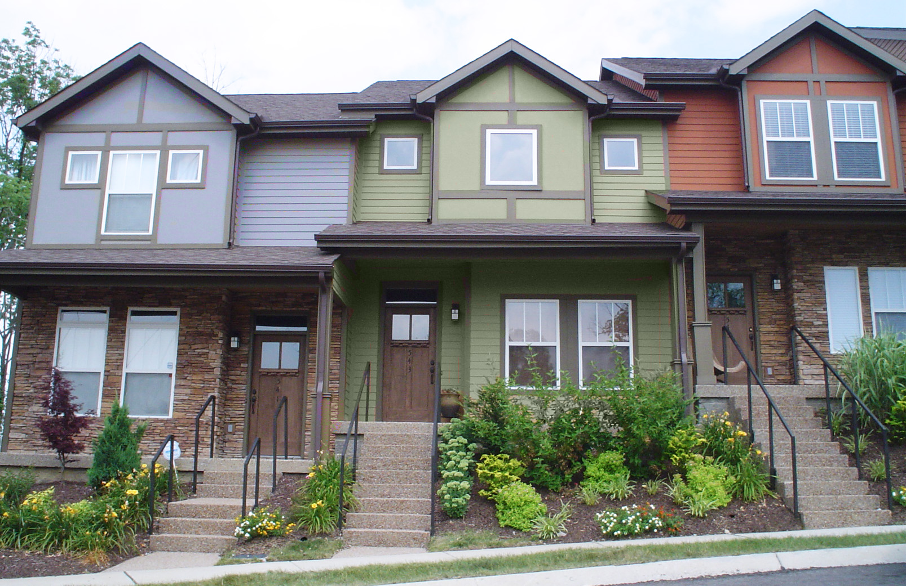
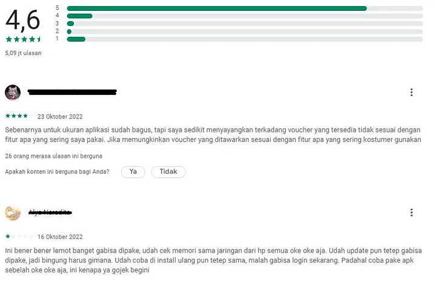
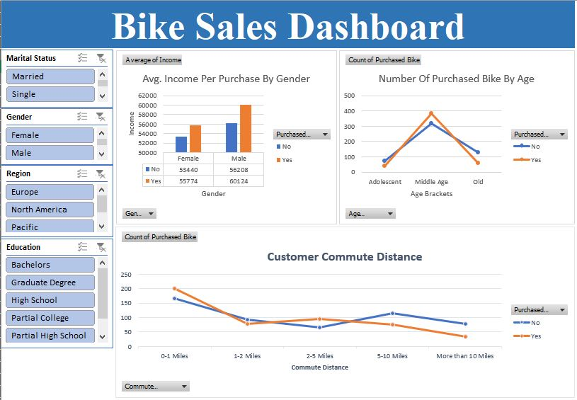
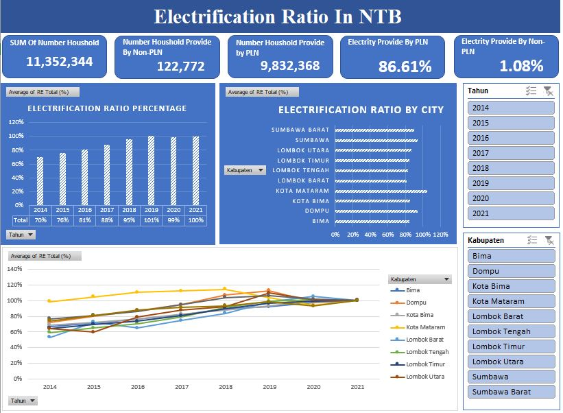
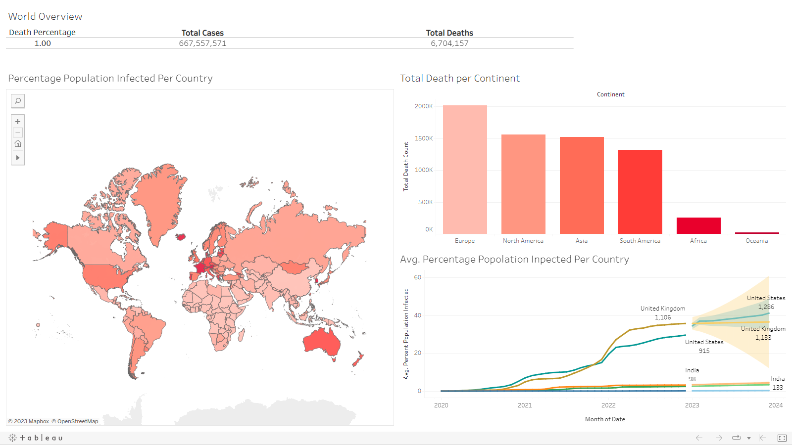
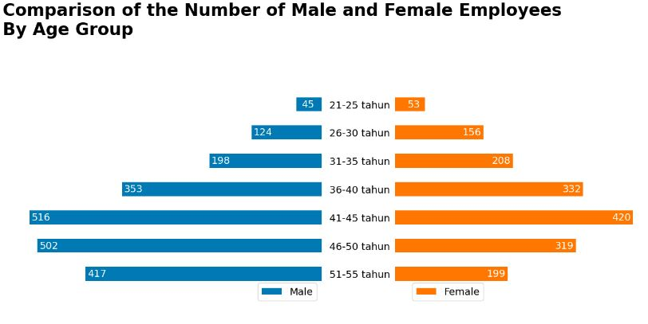
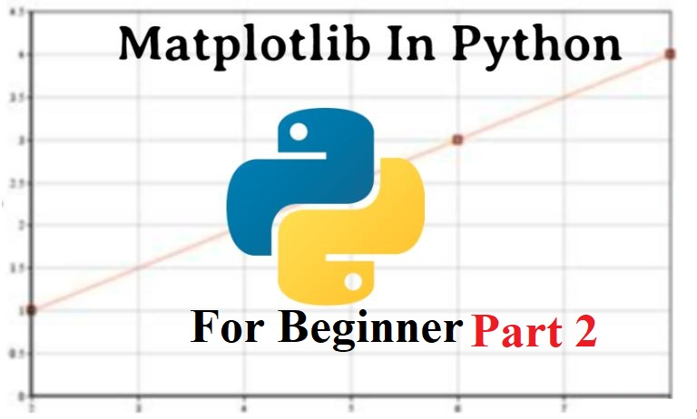

In this project, we are using raw data from Nashville housing and processing it using Microsoft SQL Server. During this project, we are going to use simple SQL queries such as select, join, order by, and then move on to more advanced ones such as substring, alter, temp table, etc.


This a web scraper written in Python to get all the reviews for an app from Google Playstore.
For more information you can read this articel.

This visualization allows you to filter by the airport and see the number of delays ranked by the carrier, as well as the carrier delay percentage through the years. and it allows you to see the kind of delay that happens. This Project Using data of flight delay in US from January 2017-July 2022, download here.

This Project using bike sales data from small company, download here. This dashboard was created to understand how different factors such as income, gender, education, marital status, regions, etc. are correlated with customers' purchase decisions.
This project showcases the basic knowledge for data analyst using Excel, such as data cleaning and formatting, creating pivot tables and recommendation charts based on those tables, and creating slicers to allow users to filter the data on the dashboard.

This project uses PLN and non-PLN electric household data and uses electrification ratio data in NTB from 2014–2021. The dashboard displays the growth rate of electricity coverage in 10 districts in NTB annually and also the number of households that have electricity, both from PLN and non-PLN.
This project showcases the basic knowledge for data analyst using Excel, such as data cleaning and formatting, creating pivot tables and recommendation charts based on those tables, and creating slicers to allow users to filter the data on the dashboard.

In this project, world COVID-19 data will be explored using SQL to uncover interesting insights.
During this project, we will clean the data to make sure the COVID Deaths and Vaccinations tables have the correct data type for each column so we can process the data using aggregate functions, joins, and CTEs and create views in SQL so the data can be visualized in Tableau.

After we explore the COVID-19 world data and make views for some important data in SQL, We are going to make a simple dashboard to visualize the views in Tableau to gain more insight from the data.

Exploratory data analysis (EDA) is an important activity in the routine of a data analyst. It enables an in-depth understanding of the dataset, helps define or discard hypotheses. It uses data manipulation techniques and several statistical tools to describe and understand the relationship between variables and how these can impact business.

Data visualization is an essential part of data science and data analytics. Remember: “Pictures speak louder than words". Data visualization is a critical skill for data professionals and anyone who works with data. Our brain processes visual information exponentially faster than words. This project shows the essential data visualization concepts and tools, with a focus on creating static, non-interactive figures and charts using the most popular and fundamental Python visualization tool, Matplotlib.

Data visualization is an essential part of data science and data analytics. Remember: “Pictures speak louder than words".
This project shows the basic application of a library in Python called Mathplotlib. This project shows you how to make a simple chart like a line chart, how to adjust the figure size, add a title to the figure, save the figure as an image, etc.

Data visualization is an essential part of data science and data analytics. Remember: “Pictures speak louder than words".
In this second part of this project, we will dive into the more advanced visualizations in mathplotlib, like multiple line charts, pie charts, bar charts, stacked charts, etc. This project also covered a lot more customization on the chart.